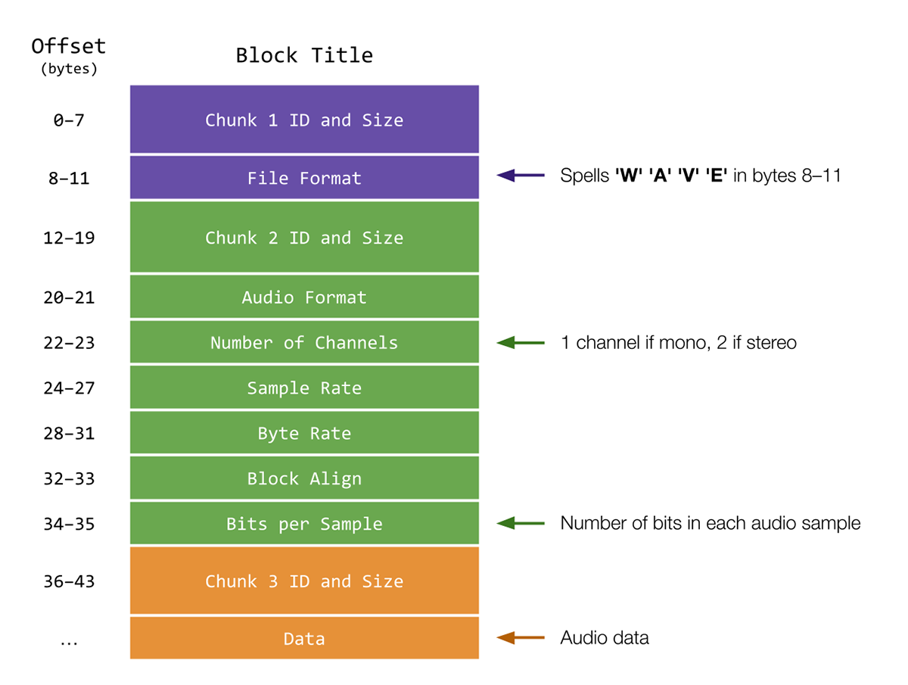

Reverse
Implement a program that reverses a WAV file, per the below.
./reverse input.wav output.wav
背景
In Electric Light Orchestra’s “Fire on High”, there’s something a little off 关于 the first minute or so of the music. If you take a listen, it sounds almost like the 音频 is playing backwards. As it turns out, if you play the beginning 小组课 of the song in reverse, you’ll hear the following:
“The music is reversible. 时间 is not. Turn 返回, turn 返回!”
Creepy, right? 这是 a technique called “backmasking,” or hiding messages in music that can only be heard when the song is played backwards. Many artists have used (or been suspected of using) this technique in their 歌曲. To be able to do our own investigation into backmasking, we’ve asked you to write a program that can reverse WAV files for us!
Unlike MP3 音频 files, WAV files are not compressed. This makes the files much easier to edit and manipulate, which is useful for the task 在 hand. To learn a little 更多 关于 WAV files, we need to take a closer look 在 the WAV file format.
入门
打开 VS Code.
开始 by clicking inside your terminal window, then execute cd by itself. You should find that its “prompt” resembles the below.
$
Click inside of that terminal window and then execute
wget https://cdn.cs50.net/2022/fall/psets/4/reverse.zip
followed by Enter in order to 下载 a ZIP called reverse.zip in your codespace. Take care not to overlook the space between wget and the following URL, or any other character for that matter!
Now execute
unzip reverse.zip
to create a folder called reverse. You no longer need the ZIP file, so you can execute
rm reverse.zip
and respond with “y” followed by Enter 在 the prompt to remove the ZIP file you downloaded.
Now type
cd reverse
followed by Enter to move yourself into (i.e., 打开) that directory. Your prompt should now resemble the below.
reverse/ $
If all was successful, you should execute
ls
and see a file named reverse.c. Executing code reverse.c should 打开 the file where you will type your code for this 问题集. If not, retrace your steps and see if you can determine where you went wrong!
The WAV File Format
Notice that, in the visual below, a WAV file is broken into three chunks. Each chunk has a few blocks of data inside of it.
The first chunk contains information 关于 the file’s type. In particular, see how the “File Format” block in the first chunk spells out ‘W’ ‘A’ ‘V’ ‘E’ in bytes 8–11, to indicate the file is a WAV file.
The second chunk contains information 关于 the upcoming 音频 data, including how many “channels” of 音频 are present and how many bits are in each 音频 “sample”. 音频 files have 1 channel when they’re “monophonic”: if you were to wear headphones, you’d hear the same 音频 in your left and right ear. 音频 files have 2 channels when they’re “stereophonic”: wearing headphones, you’d hear slightly different 音频 in your left and right ear, creating a sense of spaciousness. Samples are the individual chunks of bits which make up the 音频 you hear. With 更多 bits per sample, an 音频 file can have greater clarity (在 the cost of 更多 内存 used!).
Finally, the third chunk contains the 音频 data itself—those samples we mentioned just above.
Everything before the 音频 data is considered part of the WAV “header”. Recall that a file header is simply some metadata 关于 the file. In this case, the header is 44 bytes long.

A 更多 technical explanation of WAV headers can be found here, which is the 资源 by which this visual was inspired. Notice that we’ve included a file, wav.h, which implements all these details for you in a struct called WAVHEADER.
规格说明
Let’s write a program called called reverse that enables us to reverse a WAV file given by the user and create a 新内容 WAV file that contains the resulting reversed 音频. For simplicity’s sake, we’ll limit the files we deal with to the WAV format. 在 the 时间 the user executes the program, they should provide, using two command-line arguments, the 姓名 of the input file to be 阅读 and reversed, and the 姓名 of the output file they would like to save the resulting 音频 in. A successfully executed program should not output any text, and should create a WAV file with the user-specified 姓名 that plays the 音频 of the input WAV file in reverse. For 示例:
$ ./reverse input.wav output.wav
In reverse.c, you’ll notice that a few helpful libraries have been included, as well as a header file, wav.h. You’ll likely find these to be useful when implementing your program. We’ve left eight TODOs and two helper functions for you to fill in, and we recommend you tackle them in order from 1 to 8.
- In the first
TODO, you should ensure the program accepts two command-line arguments: the 姓名 of the input WAV file and the 姓名 of the output WAV file. If the program does not meet these conditions, you should print an appropriate error message and return1, ending the program.- 提示
- Keep in mind, the number of command-line arguments can be found in the
argcvariables passed to themainfunction when the program is executed. - Remember that
argv[0]holds the 姓名 of the program as the first command-line argument.
- Keep in mind, the number of command-line arguments can be found in the
- 提示
- In the second
TODO, you should 打开 your input file. We’ll need to 打开 the input file in “阅读-only” mode, since we’ll only 阅读 data from the input file. It 五月 be wise to check that the file has been opened successfully. Otherwise, you should print an appropriate error message and return1, exiting the program. We should hold off on opening the output file, though, lest we create a 新内容 WAV file before knowing the input file is valid!- 提示
- If the first
TODOhas been implemented properly, it is safe to assume we can reference the 姓名 of the input file usingargv[1]. - Keep in mind, any file that we 打开, we must also 关闭 when we are finished using it. This 五月 mean adding code elsewhere in the program.
- If the first
- 提示
-
In the third
TODO, you should 阅读 the header from the input file. Recall that, inwav.h, we’ve already implemented a struct that can store a WAV file’s header. Since we’ve written#include "wav.h"在 the top ofreverse.c, you, too, can use theWAVHEADERstruct. -
In the fourth
TODO, you should complete thecheck_formatfunction.check_formattakes a single argument, aWAVHEADERcalledheader, representing a struct containing the input file’s header. Ifheaderindicates the file is indeed a WAV file, thecheck_formatfunction should returntrue. If not,check_formatshould returnfalse. To check if a file is of the WAV format, we can compare the elements from the input file header to those we would expect from a WAV file. It suffices to show the “WAVE” marker characters are found in theformatmember of theWAVHEADERstruct (see 背景 for 更多 detail on WAV file headers). - In the fifth
TODO, you can now safely 打开 the output file for writing. It would still be wise to check that the file has been opened successfully.- 提示
- If the first
TODOhas been implemented properly, it is safe to assume we can reference the 姓名 of the output file usingargv[2]. - Keep in mind, any file that we 打开, we must also 关闭 when we are finished using it. This 五月 mean adding code elsewhere in the program.
- If the first
- 提示
This 五月 be a good place to stop and test that your program behaves as expected. If implemented properly, your program should 打开 a 新内容 file when executed with the proper command-line arguments.
If 在 any point you find it necessary to delete a file, execute the following command in your current working directory.
$ rm file_name.wav
If you’d rather not be prompted to confirm each deletion, execute the command below instead.
$ rm -f file_name.wav
Just be careful with that -f switch, as it “forces” deletion without prompting you.
-
下一页, now that the file type has been verified, the sixth
TODOtells us to write the header to the output file. The reversed WAV file will still have the same underlying file structure as the input file (same size, number of channels, bits per sample, etc.), so it suffices to copy the header we 阅读 in from the input file in the thirdTODOto the output file. - In the seventh
TODO, you should implement theget_block_sizefunction.get_block_size, likecheck_format, takes a single argument: 这是 aWAVHEADERcalledheader, representing the struct containing the input file’s header.get_block_sizeshould return an integer representing the block size of the given WAV file, in bytes. We can think of a block as a unit of auditory data. For 音频, we calculate the size of each block with the following calculation: number of channels multiplied by bytes per sample. Luckily, the header contains all the information we need to compute these values. Be sure to reference the 背景 小组课 for a 更多 in-depth explanation as to what these values mean and how they are stored. See toowav.h, to determine which members ofWAVHEADERmight be useful. - 提示
- Notice that one of the members of
WAVHEADERisbitsPerSample. But to calculate block size, you’ll need bytes per sample!
- Notice that one of the members of
- The eighth and final
TODOis where the actual reversing of the 音频 takes place. To do this, we need to 阅读 in each block of auditory data starting from the very 结束 of the input file and moving backwards, simultaneously writing each block to the output file so they are written in reverse order. First, we should declare an array to store each block we 阅读 in. Then, it’s up to you to iterate through the input file 音频 data. You’ll want to be sure you 阅读 through all of the 音频, but don’t erroneously copy any of the data from the header! Additionally, for 测试 purposes, we would like to maintain the order of the channels for each 音频 block. For 示例, in a WAV file with two channels (stereophonic sound), we want to make sure that the first channel of the last 音频 block in the input becomes the first channel of the first 音频 block in the output. - 提示
- A few functions (and a thorough understanding of their usage) 五月 be especially helpful when completing this 小组课 - the CS50 manual pages 五月 prove especially useful here:
-
fread: reads from a file to a buffer. The output of theget_block_sizehelper function 五月 be useful here when deciding which values to use for the size and number of data to be 阅读 在 a 时间. -
fwrite: writes from a buffer to a file. -
fseek: sets a file pointer to a given offset. It 五月 be useful to experiment with negative offset values to move a file pointer backwards. -
ftell: returns the current position of a file pointer. It 五月 be useful to inspect what valueftellreturns after the input header is 阅读 in the thirdTODOin addition to what it returns while the 音频 data is being 阅读.
-
- Keep in mind that after you use
freadto load in a block of data, theinputpointer will be pointing 在 the 地点 where the 阅读 concluded. In other words, theinputpointer 五月 need to be moved 返回 two block sizes after eachfread, one to move 返回 to where thefreadbegan, and the second to move to the 上一页, unread block.
- A few functions (and a thorough understanding of their usage) 五月 be especially helpful when completing this 小组课 - the CS50 manual pages 五月 prove especially useful here:
- Finally, be sure to 关闭 any files you’ve opened!
Usage
Here are a few 示例 of how the program should work. For 示例, if the user omits one of the command-line arguments:
$ ./reverse input.wav
Usage: ./reverse input.wav output.wav
Or if the user omits both of the command-line arugments:
$ ./reverse
Usage: ./reverse input.wav output.wav
Here’s how the program should work if the user provides an input file that is not an actual WAV file:
$ ./reverse image.jpg output.wav
Input is not a WAV file.
You 五月 assume the user enters a valid output filename, such as output.wav.
A successfully executed program should not output any text, and should create a WAV file with the user-specified 姓名 that plays the 音频 of the input WAV file in reverse. For 示例:
$ ./reverse input.wav output.wav
测试
No check50 for this one!
Execute the below to evaluate the style of your code using style50.
style50 reverse.c
如何提交
No need to 提交!